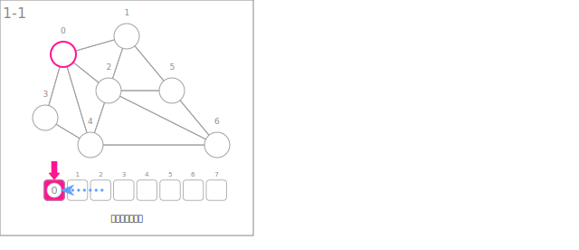

符号
| 数据 | ||
|---|---|---|
| 节点的访问状态 | color | |
| 起点的确定 | ||
|---|---|---|
 |
将起点插入队列 | que.enqueue(s) |
| 搜索 | ||
 |
访问相邻的节点 | color[v] ← GRAY |
|
将已访问的节点放入队列 | que.enqueue(v) |
 |
完成从队列取出的节点的访问 | color[u] ← BLACK |
 |
扩展已访问节点的组的范围 | color 为 GRAY 的节点 |
| 扩展已完成的节点的组的范围 | color 为 BLACK 的节点 | |
动画
起点的确定

搜索
